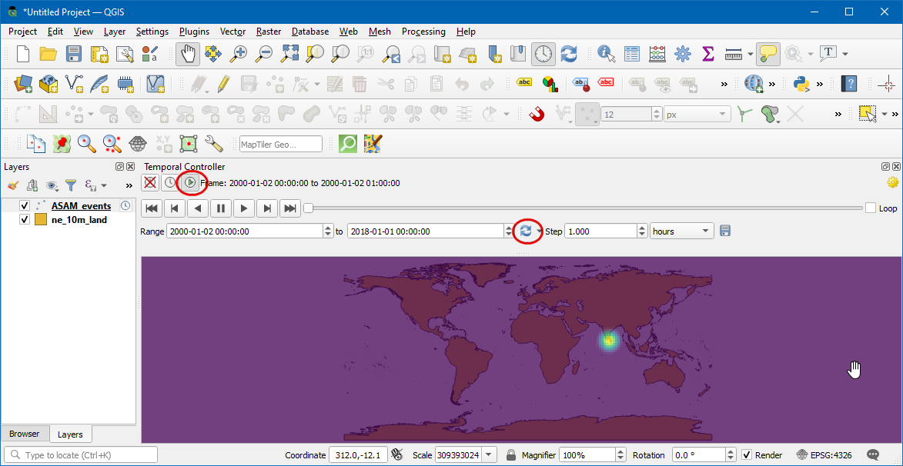
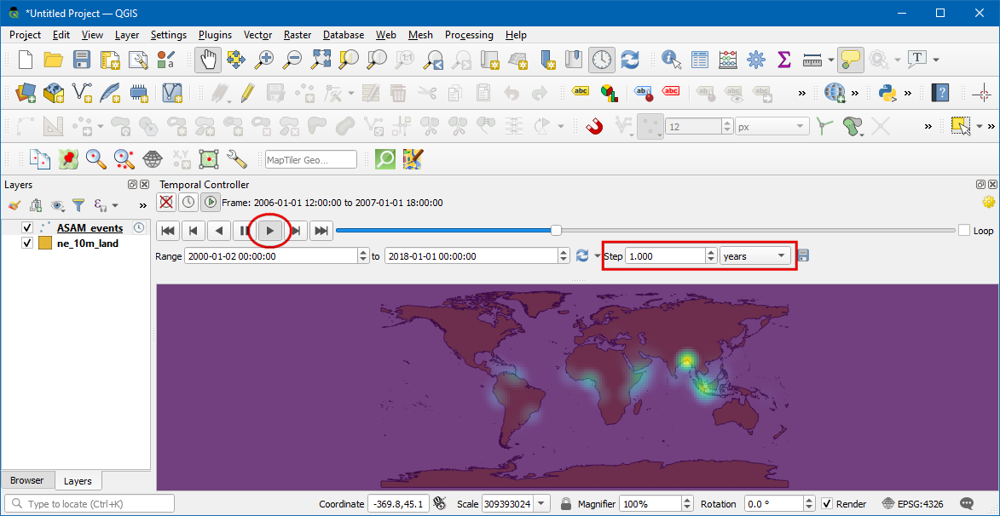

Ujaval Gandhi
Ujaval GandhiAnimiranje podataka vremenskih serija (QGIS3)¶
Vreme je važna komponenta mnogih prostornih skupova podataka. Zajedno sa informacijama o lokaciji, vreme pruža još jednu dimenziju za analizu i vizuelizaciju podataka. Ako radite sa skupom podataka koji sadrži vremenske oznake ili imate zapažanja snimljena u više vremenskih koraka, možete ga lako vizuelizovati pomoću Vremenskog kontrolera. Vremenski kontroler vam omogućava da pregledate i izvezete „sekcije“ podataka između određenih vremenskih intervala koje možete kombinovati u animacije.
Белешка
Temporalni kontroler je dostupan od QGIS 3.14 pa nadalje. Za starije verzije QGIS-a, Dodatak za Upravljanje Vremenom pruža sličnu funkcionalnost.
Pregled zadatka¶
Uzećemo sloj tačaka incidenata pomorske piraterije, kreirati vizuelizaciju toplotne mape i kreirati animaciju kako su se žarišta piraterije promenila u poslednje 2 decenije.
Druge veštine koje ćete naučiti¶
Korišćenje Heatmap renderera za brzu vizuelizaciju gustih tačkastih podataka
Kreiranje i korišćenje prilagođenih projekcija mapa
Dobijte podatke¶
Portal za informacije o pomorskoj bezbednosti Nacionalne geoprostorne obaveštajne agencije <https://msi.nga.mil/NGAPortal/MSI.portal>`_ pruža shapefile svih incidenata pomorskog piraterije u obliku Poruke o aktivnostima protiv brodarstva. Preuzmite Arc Shape file verziju baze podataka.
Natural Earth ima nekoliko globalnih vektorskih slojeva. Preuzmite 10m Physical Vectors - Land koji sadrži poligone Zemlje.
Radi lakšeg snalaženja, možete direktno preuzeti kopiju gornjih slojeva odozdo:
Izvor podataka: [NGA_MSI] [NATURALEARTH]
Procedura¶
U QGIS panelu pregledača, pronađite direktorijum u koji ste sačuvali preuzete podatke. Proširite
ne_10m_land.zipi izaberite slojne_10m_land.shp. Prevucite sloj na platno. Zatim pronađite datotekuASAM_shp.zip. Proširite je i izaberite slojasam_data_download/ASAM_events.shpi prevucite ga na platno.

Kada se sloj učita, možete videti pojedinačne tačke koje predstavljaju lokacije slučajeva piraterije. Postoje hiljade incidenata i teško je odrediti sa više piraterije. Umesto pojedinačnih tačaka, bolji način za vizuelizaciju ovih podataka je putem toplotne mape. Izaberite slojeve „ASAM_events“ i kliknite na dugme :guilabel:„Otvori panel za stilizovanje sloja“ u panelu :guilabel:„Slojevi“. Kliknite na padajući meni „Jedan simbol“.

U padajućem meniju za izbor renderera, izaberite renderer
Heatmap. Zatim, izaberite kolornu rampuViridisiz selektora Color ramp.

Podesite vrednost Radius na
5.0. Na dnu, proširite odeljak Layer Rendering i podesite Opacity na75.0%. Ovo daje lep vizuelni efekat vrućih tačaka sa slojem kopna ispod.

Sada hajde da animiramo ove podatke da bismo prikazali godišnju mapu incidenata piraterije. Kliknite desnim tasterom miša na sloj „ASAM_event“ i izaberite „Properties“.

U dijaloškom okviru Svojstva sloja, izaberite karticu Vremensko i omogućite je klikom na polje za potvrdu.

Izvorni podaci sadrže atribut
dateofocc- koji predstavlja datum kada se incident dogodio. Ovo je polje koje će se koristiti za određivanje tačaka koje se prikazuju za svaki vremenski period. IzaberiteJedno polje sa podacima/vremenomu padajućem meniju Konfiguracija,dateocckao Polje.

Sada će se pored imena sloja pojaviti simbol sata. Kliknite na „Vremenski kontrolni panel“ (ikona sata) iz trake sa alatkama za navigaciju mape.

Kliknite na „Animirana vremenska navigacija“ (ikona za reprodukciju) da biste aktivirali kontrole animacije. Kliknite na Postavi na puni opseg (ikona za osvežavanje) pored Opseg da biste automatski podesili vremenski opseg koji odgovara skupu podataka.

Sada ste spremni da pregledate animaciju. Podesite Step kao
1 Year, a zatim kliknite na dugme Play da biste pokrenuli animaciju.

Белешка
Ako je animacija prebrza, možete podesiti brzinu kadrova klikom na „Vremenska podešavanja“ (žuta ikona zupčanika) u gornjem desnom uglu panela Temporalni kontroler. Smanjenje brzine kadrova (broj kadrova u sekundi) će usporiti animaciju.
Bilo bi korisno prikazati i oznaku koja prikazuje trenutni vremenski okvir na mapi. To možemo uraditi koristeći ugrađjenu dekoraciju naslova. Idite na .

Kliknite na polje za potvrdu da biste ga omogućili i kliknite na dugme „Ubaci izraz“ i unesite sledeći izraz da biste prikazali godinu. Ovde promenljiva „@map_start_time“ sadrži vremensku oznaku trenutnog vremenskog isečka koji se prikazuje. Tako da možemo da koristimo tu vremensku oznaku i formatiramo je da prikaže godinu događaja. Pogledajte „QGIS dokumentaciju <https://docs.qgis.org/testing/en/docs/user_manual/working_with_vector/functions_list.html#format-date>“ za detalje o različitim podržanim opcijama formatiranja za vremensku oznaku.
format_date(@map_start_time, 'yyyy')
Izaberite veličinu fonta kao
25, postavite boju pozadinske trake kaobelui podesite transparentnost na50%. U Položaj izaberiteDole desno. Sada kliknite na U redu.

Kada se parametri podese u skladu sa tim, godina će se prikazati kao što je prikazano. Da biste ih izvezli kao slike i konvertovali ih u GIF, izaberite „Izvezi animaciju“ (ikona za čuvanje) u prozoru za vremensku kontrolu.

Kliknite na
...Izlazni direktorijum da biste izabrali direktorijum u kome će slike biti sačuvane.

U okviru Extent izaberite sloj . Kliknite na Sačuvaj.

Kada se izvoz završi, videćete PNG slike za svaku godinu (ukupno 18 slika) u izlaznom direktorijumu.

Sada hajde da napravimo animirani GIF od ovih slika. Postoji mnogo opcija za kreiranje animacija od pojedinačnih okvira slika. Sviđa mi se ezgif zbog jednostavnog i onlajn alata. Posetite sajt i kliknite na Izaberite datoteke i izaberite sve .png datoteke. Kada ih izaberete, kliknite na dugme Otpremi i napravi GIF!. Kada ga kreirate, možete preuzeti GIF pomoću dugmeta Sačuvaj.

If you want to give feedback or share your experience with this tutorial, please comment below. (requires GitHub account)